Numbers & Forms
Designing a polytropos urbanism for La Cienega & Jefferson Station, Los Angeles.
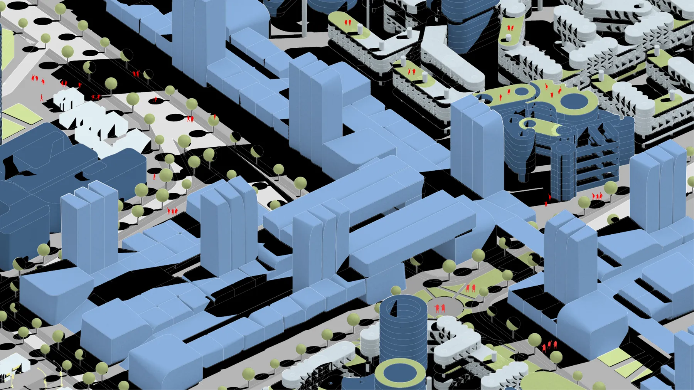
- Team
- Zhiwen Qiu, Bennet Liang
- Duration
- Sep 2018 – Jun 2019
- Advisors
- Prof. Neil Denari, Prof. Dana Cuff, UCLA AUD
- My role
- Urban planning research, spatial analytics, urban & spatial modeling, architecture, visualization
In this research project, each team of two students took one Expo Line station as the center of a 500-meter radius. We were interested in exploring how the multi-scaled city would evolve over fifty years. Los Angeles built its metro rail lines over the last ten years at enormous cost; they are expected to take 10% of cars off the streets and freeways and dramatically improve the flow of traffic in the city.
We worked with programmatic methods to produce general massing, where each form can adapt to a certain typology. For instance, housing usually requires stacked and normative forms and organizations, while deviant forms can be applied to programs with a looser fit to the geometry of the building envelope. Such deviations from the norm express architecture's formal response to program. We were interested in working with the index of the gridded world as a referential matrix. In all of these examples, degrees and kinds of change to the norm set up the rhetoric of the project.
Urban Analysis
We first investigated and documented the existing conditions of the site, including zoning, land use, land ownership, population, economies, demographics and architectural massing.
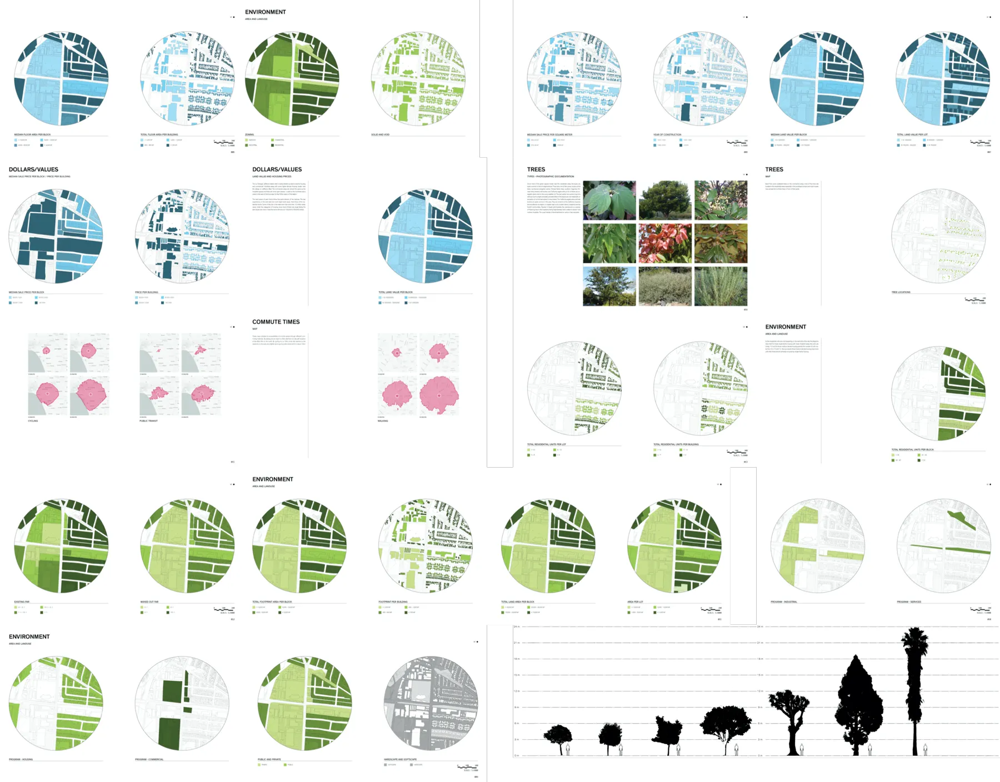
Strategies and Scenarios
In a capitalist, privatized society, how can developers make a profit while contributing to public goods?
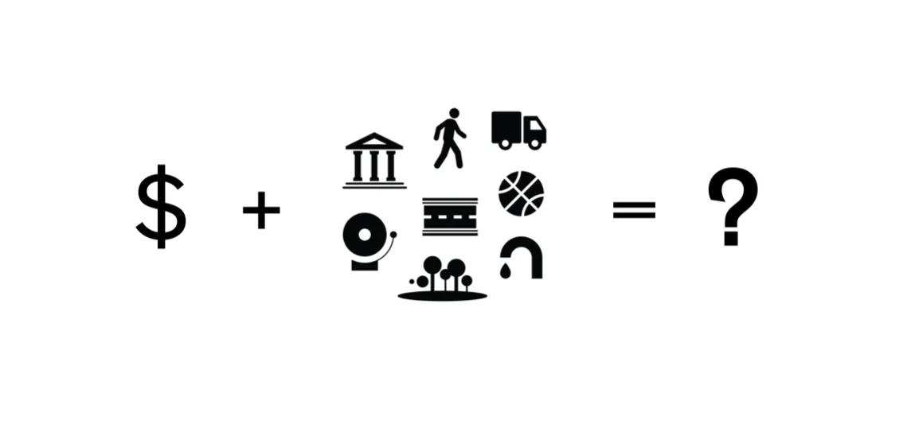
We proposed co-living apartments that serve the 2028 Olympic Games as athlete dorms, high-rise apartment towers that leave more footprint for infrastructure, commercial buildings that provide public assembly spaces, and light industries that promote technology development.
Meanwhile, tax revenue subsidizes high-tech offices that provide jobs. The stadium built for the Olympics opens to the public, and a campus is built to nurture the next generation.
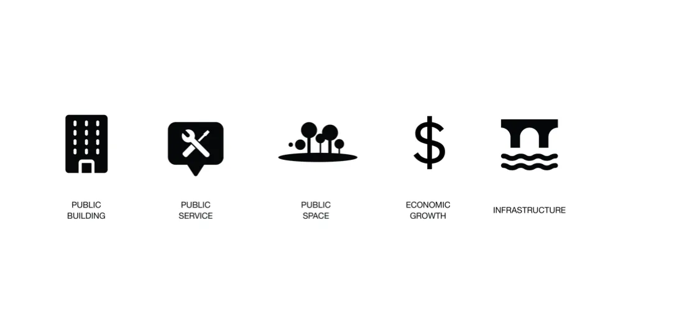
Stage One: 2028 Olympics
More people are working remotely and want flexible, mobile apartments at affordable prices. We believe shared space is a solution to rapid urbanization. The empty land northwest of the metro station and part of the existing low-density apartments to the southeast are transformed into new co-living zones.
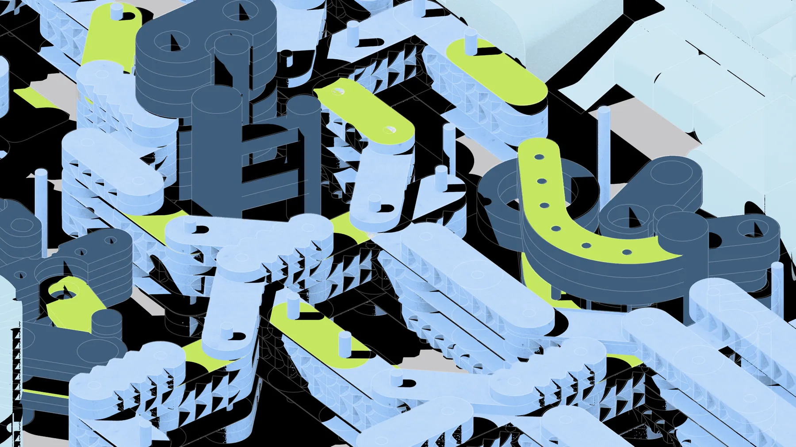
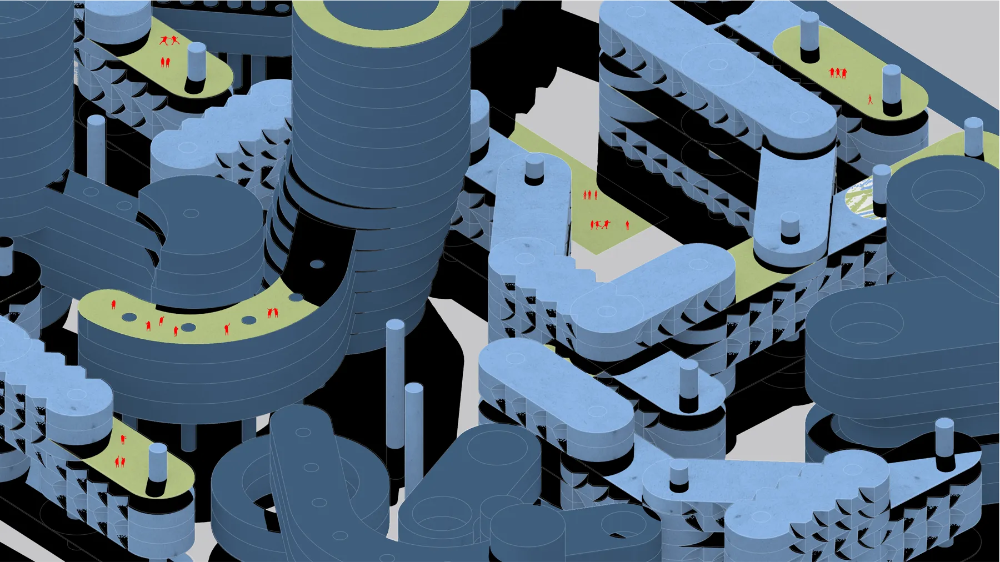
Stage Two: 2040
A bill is passed to encourage transit-oriented housing, allowing residential buildings up to 20 floors (about 60 meters). It also requires developers to give back to the public in exchange for floor-area bonuses, by either (1) building more affordable housing units, or (2) creating public space that vitalizes the community, such as streets for public travel or year-round outdoor event spaces that give people a sense of belonging.
In addition, commercial centers are built along major corridors to encourage public engagement. The metro station intersection becomes pedestrian-only by burying car lanes below grade, and walkways on the second and third floors let pedestrians enjoy the greenery as they walk.
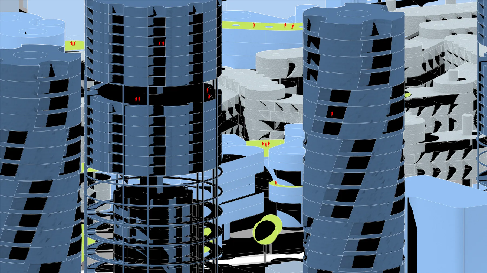
Stage Three: 2050
The industrial zone on the southwest corner is rebuilt, and existing small businesses are replaced by larger manufacturers that provide more jobs, producing green facades, green windows, electric vehicle components and robotics.
Civic centers built next to apartments on the northeast corner invite residents to concerts, sports and art exhibitions. Some provide public storage for short-term residents, and several government buildings provide public services such as LADWP.
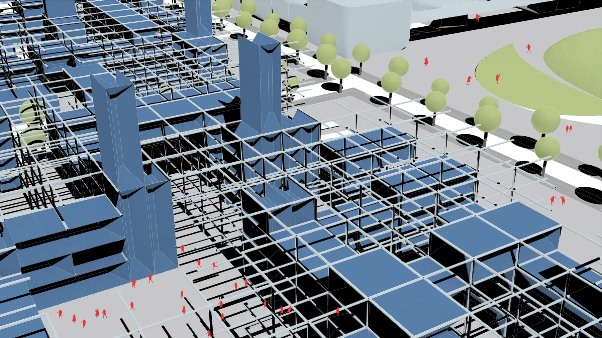
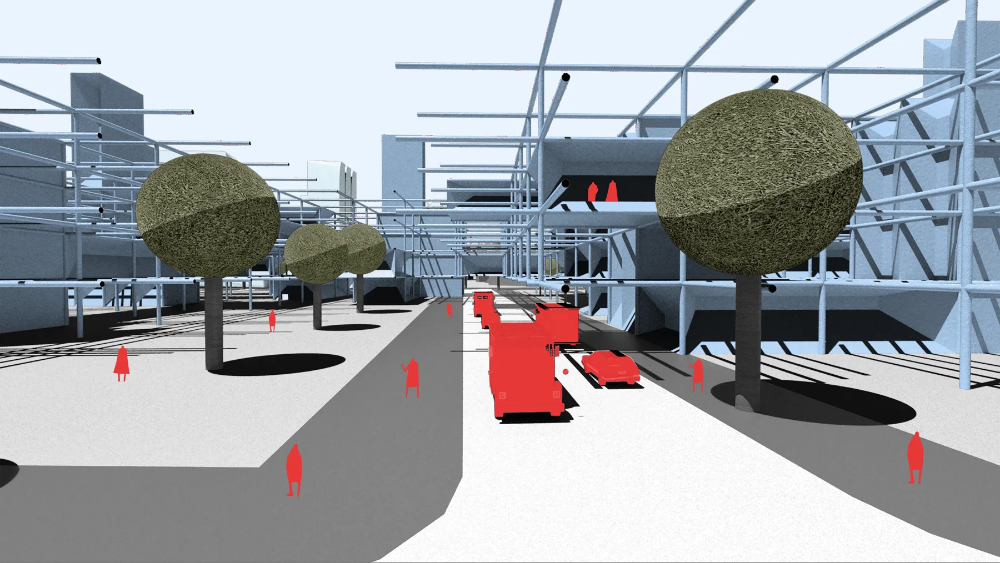
Stage Four: 2050 & Beyond
We envision the northwest corner becoming a complex that combines education and high tech to cultivate innovation for the public. The interlocking typologies offer shared, smart working spaces where startups can develop new products for the long-term benefit of the site.
A campus is built next to education companies that offer bootcamps and classes, giving people who don't attend college a path to a certificate, and those already working a chance to learn new skills.
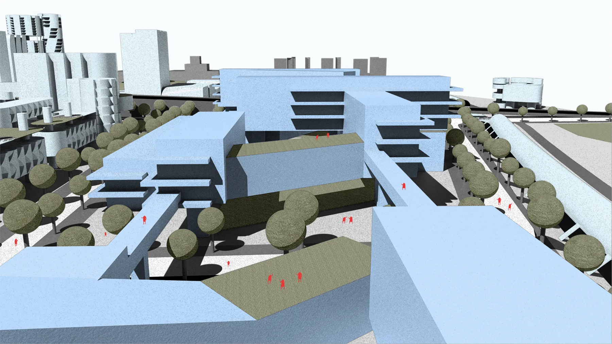
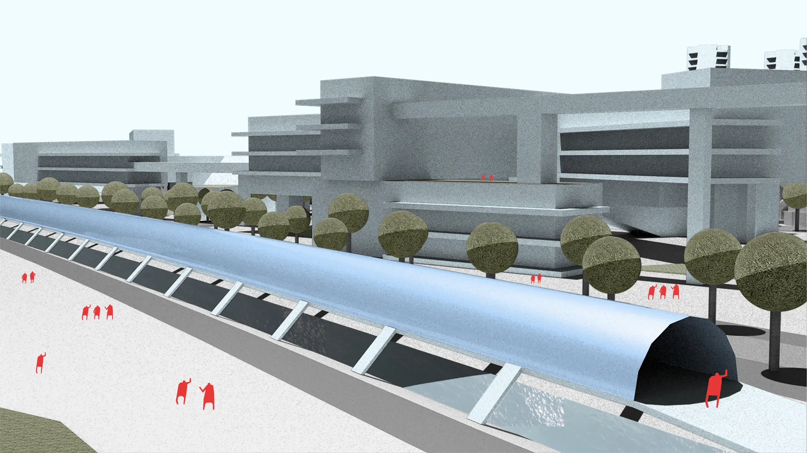
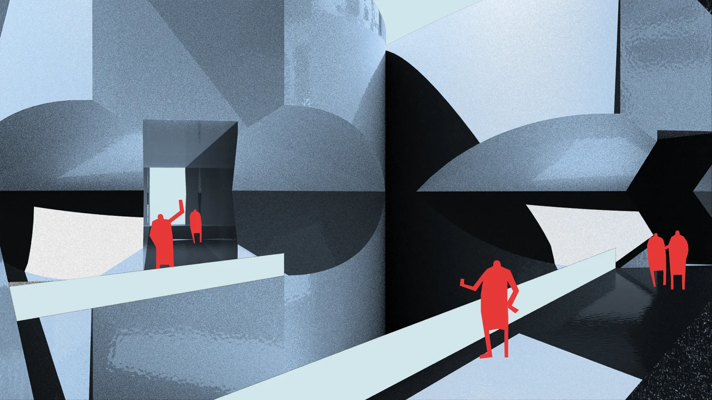